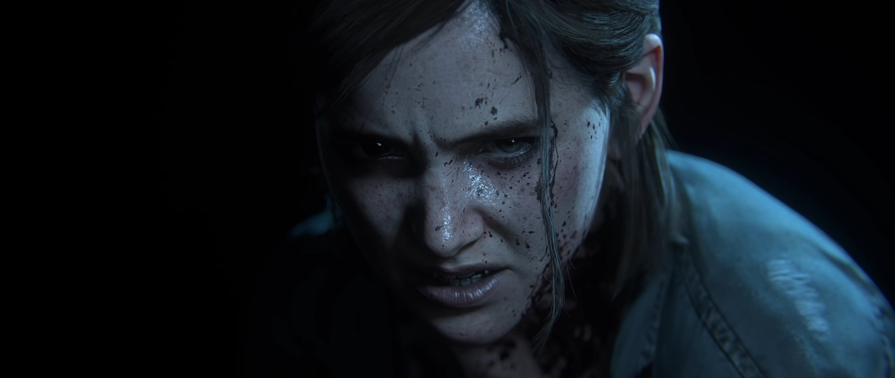
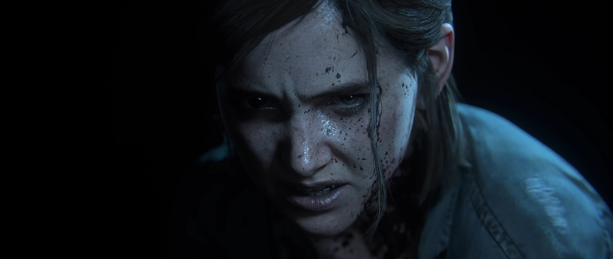

The Last of Us se passa 20 anos após um surto global de fungos que infectou a maior parte da população. A história nos conta a perigosa jornada de Joel e Ellie através dos Estados Unidos para encontrar uma comunidade segura, abordando durante essa jornada temas como amor, perda, superação e sobrevivência.